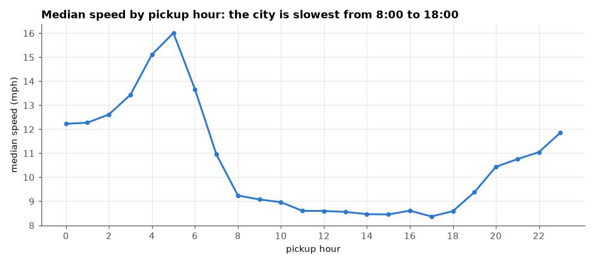
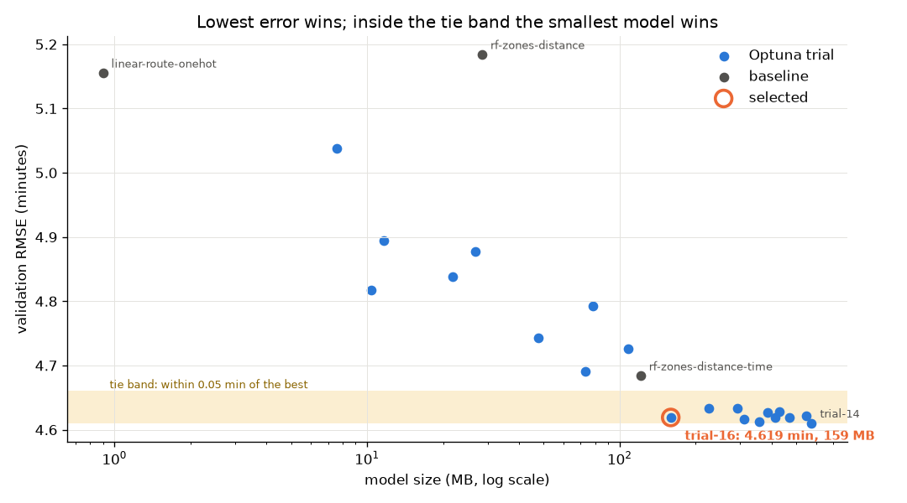
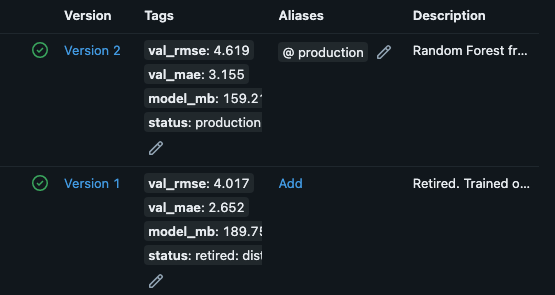
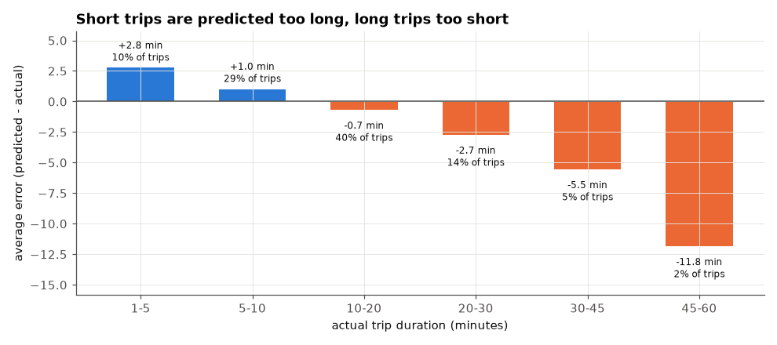

From raw trip data to a deployed ML microservice
with MLflow, FastAPI and Docker
Sean Kress · November 2026

| Run | RMSE | Size |
|---|---|---|
| Guess the average | 9.65 | – |
| Course linear model | 5.16 | 1 MB |
| Forest: zones + distance | 5.18 | 29 MB |
| + hour and weekday | 4.68 | 121 MB |
| Best Optuna trial | 4.610 | 575 MB |
| Selected: trial-16 | 4.619 | 159 MB |
Rule, set before tuning: lowest error wins, but within 3 seconds of the best, the smallest model wins. Half a second less accurate, 3.6× smaller.

Used the distance actually driven, only known after the trip
Uses the typical distance between the two zones, learned from training trips

MLflow model registry: version 1 stays visible, tagged with why it was retired.
$ docker compose up -d --wait $ curl -X POST localhost:8000/predict -d '{ "PULocationID": 161, "DOLocationID": 236, "pickup_datetime": "2025-01-23T17:30:00" }' {"predicted_duration_minutes": 13.75, "model_name": "trip-duration", "model_version": "2"}
| Trip | Minutes |
|---|---|
| Midtown → Upper East Side, Thu 17:30 | 13.8 |
| Same trip, Sun 05:30 | 8.1 |
| Midtown → JFK, Thu 17:30 | 54.0 |
